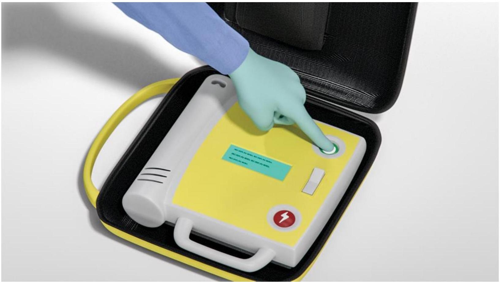
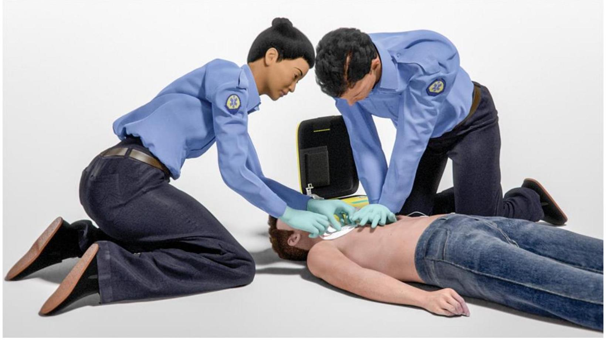
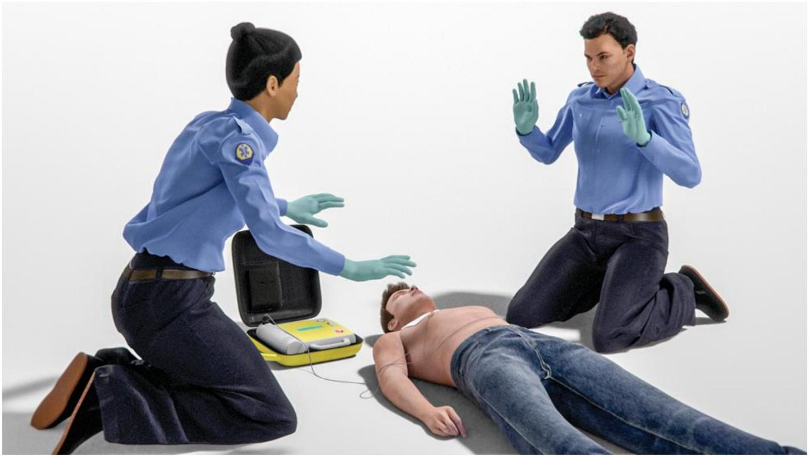
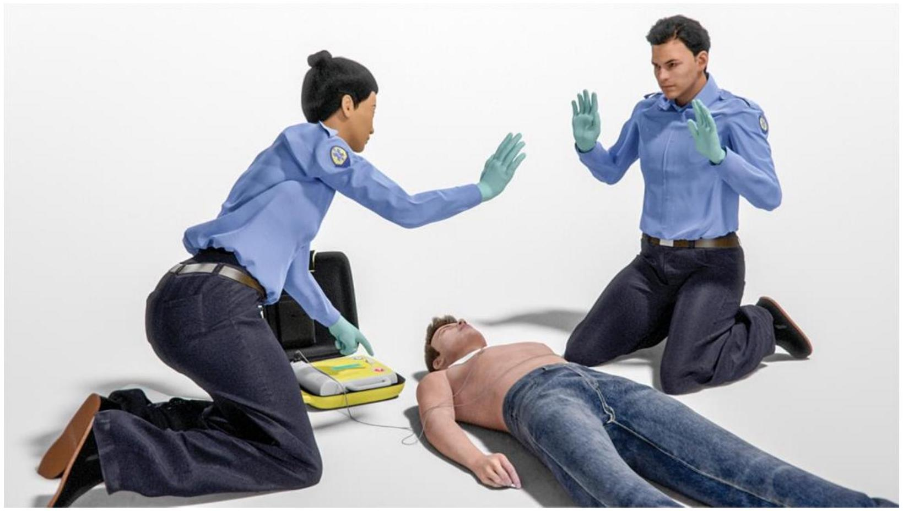
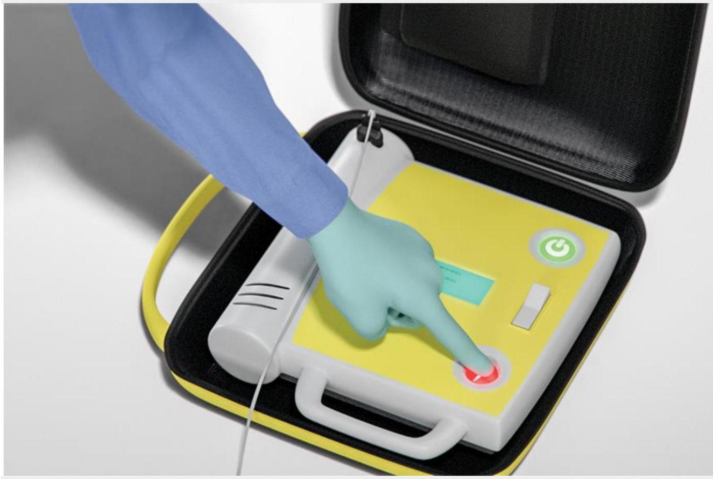
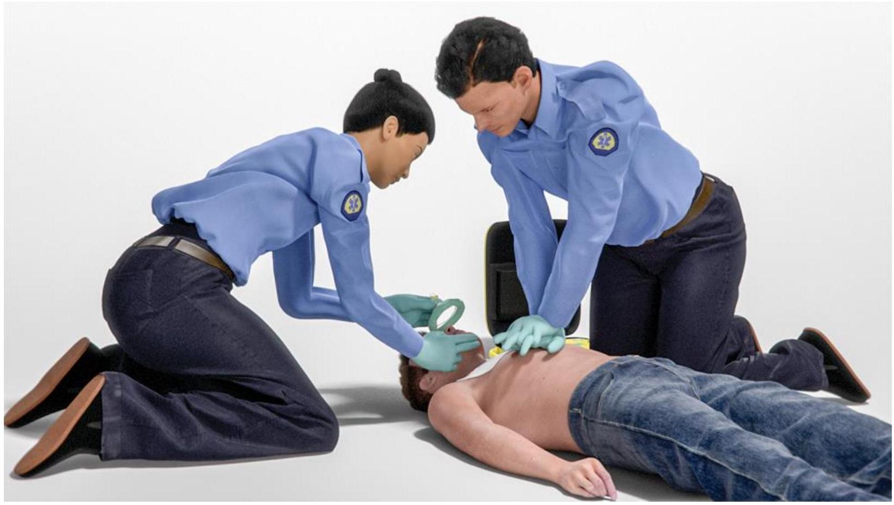

Part 4: Automated External Defibrillator for Adults and Children 8 Years of Age and Older
An automated external defibrillator, or AED, is a lightweight, portable, computerized device that can identify an abnormal heart rhythm that needs a shock. The AED can then deliver a shock that can stop the abnormal rhythm and allow the heart's normal rhythm to return. AEDs are simple to operate. They allow laypersons and healthcare providers to attempt defibrillation safely.
Learning Objectives
In this Part, you will learn about:
The importance of using an AED as soon as possible for adults and children 8 years of age and older
The appropriate use of an AED for adults and children 8 years of age and older
Defibrillation
The AED identifies abnormal heart rhythms as shockable or nonshockable. Shockable rhythms are treated with defibrillation. Defibrillation is the medical term for interrupting or stopping an abnormal heart rhythm by using controlled electrical shocks. The shock stops the abnormal rhythm. This resets the heart's electrical system so a normal (organized) heart rhythm can return.
If effective circulation returns, the victim's heart muscle is once again able to pump blood. The victim will have a heartbeat that produces a palpable pulse (a pulse that can be felt by the rescuer). This is called return of spontaneous circulation, or ROSC. Signs of ROSC include breathing, coughing, or movement and a palpable pulse or measurable blood pressure.
Early Defibrillation
Early defibrillation increases the chance of survival from cardiac arrest that is caused by an abnormal or irregular heart rhythm, or an arrhythmia. Arrhythmias occur when the electrical impulses that cause the heart to beat happen too quickly, too slowly, or erratically. Two life-threatening shockable arrhythmias that cause cardiac arrest are pulseless ventricular tachycardia (pVT) and ventricular fibrillation.
pVT: When the lower chambers of the heart (ventricles) begin contracting at a very fast pace, a rapid heart rate known as ventricular tachycardia develops. In extremely severe cases, the ventricles pump so quickly and inefficiently that there is no detectable pulse (ie, the "pulseless" in pVT). Body tissues and organs, especially the heart and brain, no longer receive oxygen.
Ventricular fibrillation: In this arrest rhythm, the heart's electrical activity becomes chaotic. The heart muscles quiver in a fast, unsynchronized way so that the heart does not pump blood.
Early defibrillation, high-quality CPR, and all components of the Chain of Survival are necessary to improve chances of survival from pVT and ventricular fibrillation.
Public Access Defibrillation Programs
To provide early defibrillation, rescuers need to have an AED immediately available. Public access defibrillation (PAD) programs increase AED availability and train laypeople how to use them. PAD programs place AEDs in public places where large numbers of people gather, such as office buildings, airports, convention centers, and schools. They also place AEDs in communities where people are at higher risk for cardiac arrest, such as office buildings, casinos, and apartment buildings. Some PAD programs coordinate with local EMS so that telecommunicators can direct callers to the nearest AED.
AED Arrival
Once the AED arrives, place it at the victim's side, near the rescuer who will operate it. This position provides ready access to AED controls and helps ensure easy placement of AED pads. It also allows a second rescuer to continue high-quality CPR from the opposite side of the victim without interfering with AED operation. Ensure that AED pads are placed directly on the skin and are not placed over clothing, medication patches, or implanted devices.
Using the AED
Know Your AED
AED equipment varies according to the model and manufacturer. But all AEDs operate in basically the same way. The universal steps for operating an AED can guide you in most situations. However, you should still be familiar with the AED used in your setting. For example, it is important to know whether you must manually power on your AED or whether it powers on automatically when you open the lid.
Operating an AED: Universal Steps
Begin by opening the AED. If needed, power it on. During a resuscitation attempt, follow the AED's prompts. These may be electronic voice prompts or digital screen prompts.
To reduce the time to shock delivery, try to perform the following 2 steps within 30 seconds after the AED arrives at the victim's side:
Open the carrying case (if applicable). Power on the AED (Figure 20) if needed.
a. Some devices power on automatically when you open the lid or case.
b. Follow the AED prompts.

Figure 20. Power on the AED.
Attach the AED pads to the victim's bare chest. Avoid placing the pads over clothing, medication patches, or implanted devices. Choose adult pads for victims 8 years of age and older. This should be done while a second rescuer continues CPR.
a. Peel the backing away from the AED pads.
b. Attach the adhesive AED pads to the victim's bare chest. Follow the placement diagrams on the pad (Figure 21). See Critical Concepts: AED Pad Placement Options later in Part 4 for common placement options.
c. Attach the AED connecting cables to the AED device (some AEDs have preconnected cables).

Figure 21. The AED operator attaches AED pads to the victim and then attaches the electrodes to the AED.
"Clear" the victim and allow the AED to analyze the rhythm (Figure 22).
a. When the AED prompts you, clear the victim during analysis. Be sure no one is touching the victim, not even the rescuer in charge of giving breaths.
b. Some AEDs will tell you to push a button to allow the AED to begin analyzing the heart rhythm; others will analyze automatically. The AED may take a few seconds to analyze.
c. The AED then tells you if the victim needs a shock.

Figure 22. The AED operator clears the victim before rhythm analysis. If needed, the AED operator then activates the analyze feature of the AED.
If the AED advises a shock, it will tell you to clear the victim (Figure 23A) and then deliver a shock.
a. Before delivering the shock, clear the victim. Do this by making sure that no one is touching the victim.
Loudly state a "clear the victim" message, such as "Everybody clear."
Look to be sure that no one is in contact with the victim.
b. Press the Shock button (Figure 23B). The shock will produce a sudden contraction of the victim's muscles.

Figure 23A. The AED operator clears the victim before delivering a shock.

Figure 23B. When everyone is clear of the victim, the AED operator presses the Shock button.
If the AED prompts that no shock is advised or after any shock is delivered, immediately resume CPR, starting with chest compressions (Figure 24).
After about 5 cycles or 2 minutes of CPR, the AED will prompt you to repeat Steps 3 and 4.

Figure 24. If no shock is indicated and immediately after any shock delivered, rescuers start CPR, beginning with chest compressions.
Post-Shock Actions
Minimize Time Between Last Compression and Shock Delivery
Research has shown that the shorter the time between the last compression and shock delivery, the better the chances of ROSC. Minimizing interruptions requires practice and team coordination, especially between the compressor and the AED operator.
Do Not Delay High-Quality CPR After AED Use
Immediately resume high-quality CPR, starting with chest compressions (Figure 24) after either of the following:
The AED operator delivers a shock
The AED prompts, "No shock advised"
After about 5 cycles or 2 minutes of high-quality CPR, the AED will prompt you to repeat Steps 3 and 4. Continue until advanced life support providers take over or the victim begins to breathe, move, or otherwise react.
Your AED may include smaller pads designed specifically for children younger than 8 years of age. Do not use the child pads for an adult. Child pads deliver a shock dose that is too low for an adult and will likely not be successful. It is better to provide high-quality CPR than to attempt to shock an adult victim with child pads.
Special Circumstances
When placing AED pads, you may need to take additional actions when the victim:
Has a hairy chest
Is immersed in water or has water or liquid covering the chest
Has an implanted defibrillator or pacemaker
Has a transdermal medication patch or other object on the surface of the skin where you need to place the AED pads
Is a pregnant woman
Is wearing jewelry or bulky clothing
Hairy Chest
The AED pads may stick to the chest hair and not to the skin on the chest. If this occurs, the AED will not be able to analyze the victim's heart rhythm and will display a "check electrodes" or "check electrode pads" message.
Remember to note whether the victim has a hairy chest before you apply the pads. Then, if needed, use the razor from the AED carrying case to shave the area where you will place the pads.
If you do not have a razor but do have a second set of pads, use the first set to remove the hair. Apply the first set of pads, press them down so they stick as much as possible, and quickly pull them off. Then apply the new second set of pads.
Presence of Water or Other Liquids
Water and other liquids conduct electricity. Do not use an AED in water.
If the victim is in water, pull the victim out of the water.
If the chest is covered with water or sweat, quickly wipe the chest before attaching the AED pads.
If the victim is lying on snow or in a small puddle, you may use the AED after quickly wiping the chest.
Implanted Defibrillators and Pacemakers
Victims with a high risk for sudden cardiac arrest may have implanted defibrillators or pacemakers that automatically deliver shocks directly to the heart. If you place an AED pad directly over an implanted medical device, the implanted device may interfere with the delivery of the shock.
These devices are easy to identify because they create a hard lump beneath the skin that is most often in the left upper chest but can also be found in the right upper chest or abdomen. The lump can range from the size of a silver dollar to half the size of a deck of playing cards.
If you identify an implanted defibrillator/pacemaker:
If possible, avoid placing the AED pad directly over the implanted device.
Follow the normal steps for operating an AED.
Transdermal Medication Patches
Do not place AED pads directly on top of a medication patch. The patch may interfere with the transfer of energy from the AED pad to the heart. This could also cause small burns to the skin. Examples of medication patches are nitroglycerin, nicotine, pain medication, and hormone replacement therapy patches.
If it will not delay shock delivery, remove the patch, and wipe the area before attaching the AED pad.
To avoid the transfer of medication from the patch to you, wear protective gloves or use another type of barrier when removing the patch. Remember to avoid delays as much as possible.
Pregnant Woman
You should use an AED for a pregnant woman in cardiac arrest as you would for any cardiac arrest victim. Shock from the AED will not harm the baby. Without lifesaving treatment to the mother, the baby will not likely survive. If the woman is revived, place her on her left side. This helps improve blood flow to her heart and, therefore, to the baby.
Clothing and Jewelry
Quickly move bulky clothes out of the way. If a person's clothes are difficult to remove, you can still provide compressions over clothing. If an AED becomes available, remove all clothes that cover the chest because pads must not be placed over clothing. You do not need to remove a person's jewelry as long as it does not come into contact with the AED pads.
Review Questions
What is the most appropriate first step to take as soon as the AED arrives at the victim's side?
Press the Analyze button.
Apply the pads.
Power on the AED.
Press the Shock button.
Which step is one of the universal steps for operating an AED?
Shaving the victim's hairy chest
Placing the pads on the victim's bare chest
Removing the victim from water
Finding the victim's implanted pacemaker
If a victim of cardiac arrest has an implanted pacemaker or defibrillator, what special steps should you take?
Avoid placing the AED pad directly over the implanted device.
Avoid using the AED to prevent damage to the implanted device.
Turn off the implanted device before applying the AED pads.
Consider using pediatric pads to decrease the shock dose delivered.
What action should you take while the AED is analyzing the heart rhythm?